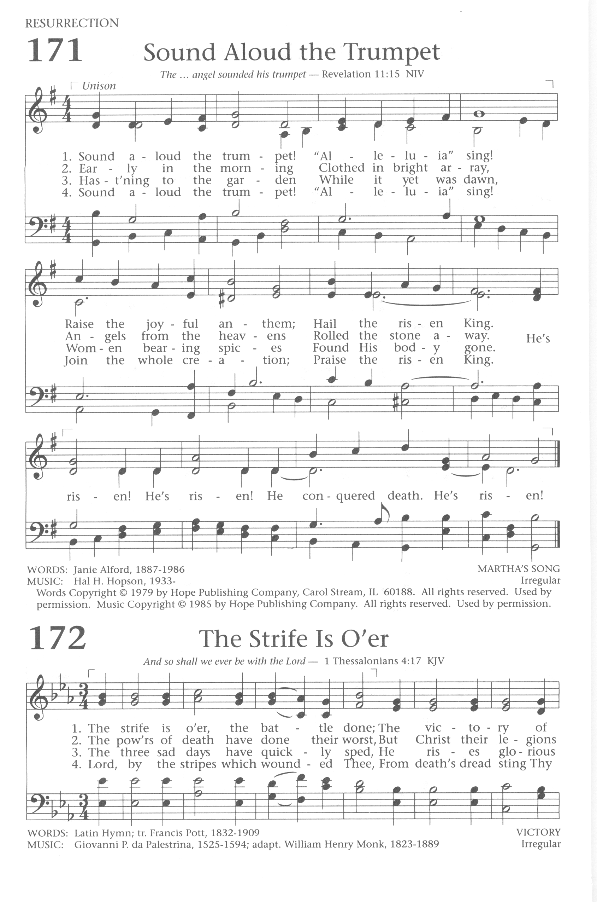

|
|
【號角大聲吹響】 |
|
1. Sound aloud the trumpet! He's risen! He's risen! 2. Early in the morning 3. Hast'ning to the garden 4. Sound aloud the trumpet!
|
號角大聲吹響，「哈利路亞」唱！ 副歌： 祂復活！祂復活！ |
|
https://hymnary.org/hymn/BH1991/page/154
 |
|
|
|
|

-
https://hymnary.org/media/fetch/142862
| Text: | Sound Aloud the Trumpet |
| Author: | Janie Alford |
| Tune: | MARTHA'S SONG |
| Composer: | Hal H. Hopson |
| Short Name: | Janie Alford |
| Full Name: | Alford, Janie, 1887-1986 |
| Birth Year: | 1887 |
| Death Year: | 1986 |
| Text Information | |
|---|---|
| First Line: | Sound aloud the trumpet! |
| Title: | Sound Aloud the Trumpet |
| Author: | Janie Alford |
| Refrain First Line: | He's risen! He's risen! |
| Meter: | Irregular |
| Language: | English |
| Publication Date: | 1991 |
| Scripture: | |
| Copyright: | 1979 by Hope Publishing Company |
| Tune Information | |
|---|---|
| Name: | MARTHA'S SONG |
| Composer: | Hal H. Hopson |
| Meter: | Irregular |
| Key: | G Major |
| Copyright: | 1985 by Hope Publishing Company |
| Short Name: | Hal H. Hopson |
| Full Name: | Hopson, Hal H., 1933- |
| Birth Year: | 1933 |
Hal H. Hopson (b. Texas, 1933) is a prolific composer, arranger, clinician, teacher and promoter of congregational song, with more than 1300 published works, especially of hymn and psalm arrangements, choir anthems, and creative ideas for choral and organ music in worship. Born in Texas, with degrees from Baylor University (BA, 1954), and Southern Baptist Seminary (MSM, 1956), he served churches in Nashville, TN, and most recently at Preston Hollow Presbyterian Church in Dallas, Texas. He has served on national boards of the Presbyterian Association of Musicians and the Choristers Guild, and taught numerous workshops at various national conferences. In 2009, a collection of sixty four of his hymn tunes were published in Hymns for Our Time: The Collected Tunes of Hal H. Hopson.
Emily Brink